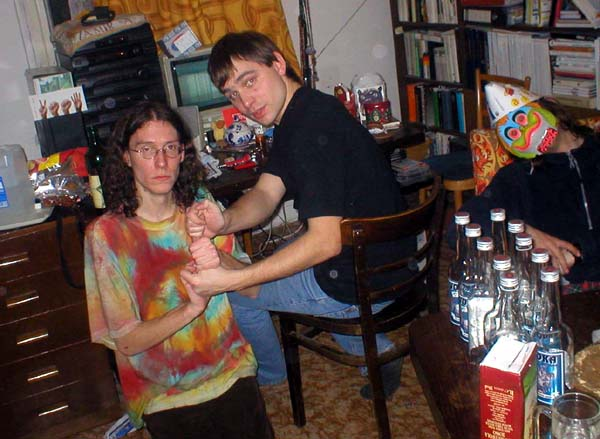
20.2.2004 (fotografovala asi Petra Biòovcová èi Filip Votava)
25. narozeniny PJN a 25 l Liha od Tomáše. Dr�me si palce, �e to vypijem bez úhony!
5.3.2004 (fotografovala Petra Biòovcová)
Generální zkouška Píseèku 04 na DAMU (zleva Josef Tomáš, Marie Petr, Filip Filip).
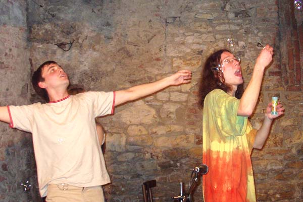
21.4.2004 (fotografoval Jaroslav Novotnı)
Happíseò v Damúze.
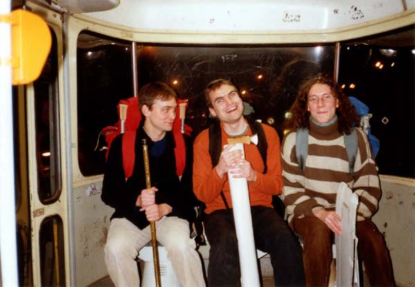
27.4.2004 (fotografovala Petra Biòovcová)
Po dvou letech v plzeòské tramvaji, s jinımi krámy, ale poøád naèerno.
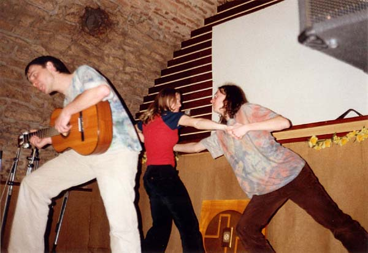
27.4.2004 (fotografoval Filip Votava)
Noèní afterpárty v plzeòském Hifi klubu.
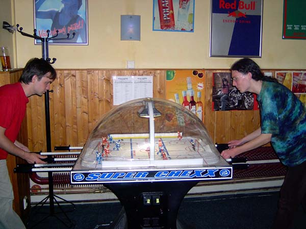
4.6.2004 (fotografovala Amálka Votrubová)
KT pøesedlali po letech vášnivıch bojù z minihokeje na maxibrutálú�o Sazka Arénu v klubu Ajeto u Pidi.
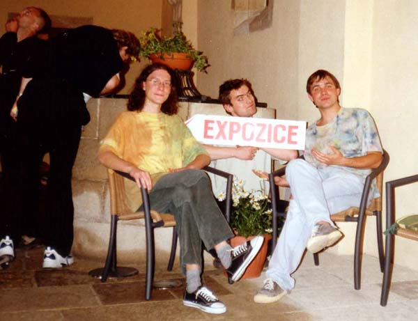
5.6.2004 (fotografovala Radka Mysliveèková)
Muzejní noc a Krvik Totr aktivní souèástí expozice.2
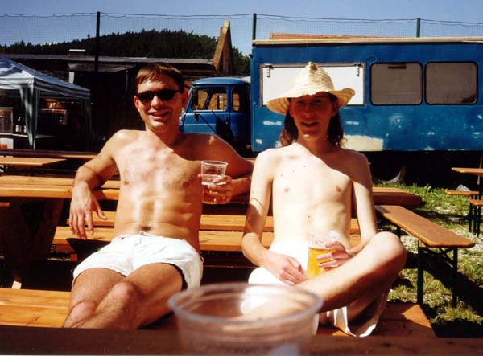
16.7.2004 (fotografoval za a) Bogdan Cieœlar, b) Filip Votava, c) Soòa Smugalová)
Krvik Totr Countrysied èili Pohoda v Øepicích.
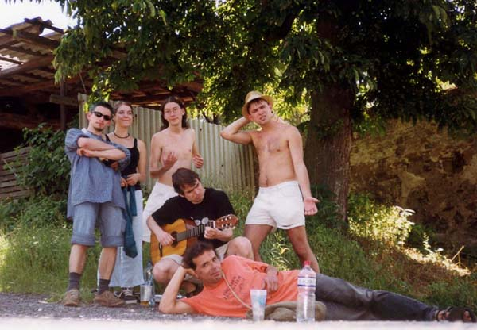
17.7.2004 (fotografovala samospouš� Krvik Totr)
Zkouška pøedstavení na dvoøe místního JZD. Zleva a shora: Bogdan Cieœlar, Soòa Smugalová, PJN, TK, Filip Votava a neznámá socka.
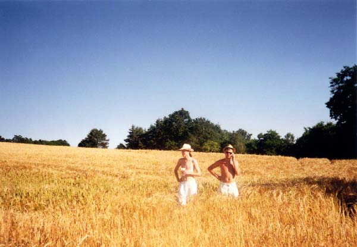
17.7.2004 (fotografoval a) Bogdan Cieœlar, b) Filip Votava, c) Soòa Smugalová)
V poli øepickém.
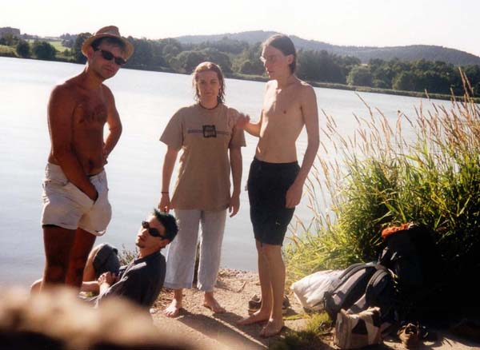
17.7.2004 (fotografovala samospouš� Krvik Totr)
Zastávka u rybníka. Tomáš - Soòa Smugalová - Petr - dole Bogdan Cieœlar, co má tu nohu.
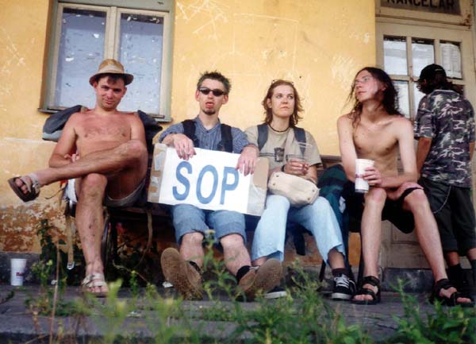
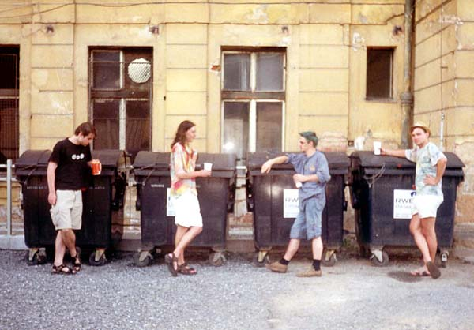
17.7.2004 (první snímek fotografoval Filip Votava, druhı Soòa Smugalová)
Krvik Totr na nádra�í v Øepicích (1) a Plzni (2). Krom tria jest k vidìní Bogdan Cieœlar a Soòa Smugalová.
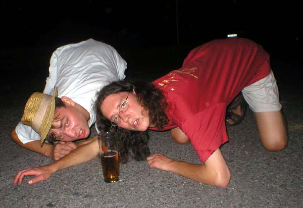
1.8.2004 (fotografoval nìgdo bùchvígdo)
Pan Ahojka poøádal buøtíèky ve Vokovicích spolu se 17 kamarády a dvìma sudy pyva...
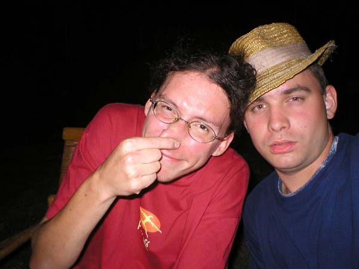
5.8.2004 (fotografoval Bogdan Cieœlar)
...a po pár dnech si akcièku zopakoval...
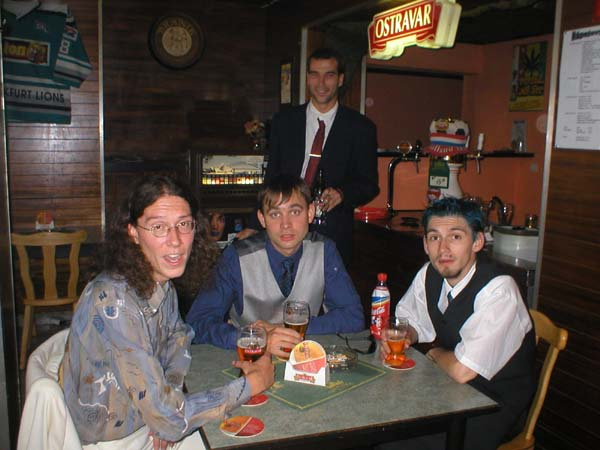
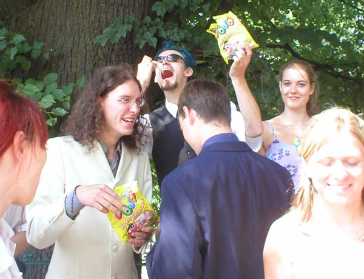
7.8.2004 (fotografoval nìdo z grupy)
Na svatbì Martiny Rıcové (1) -Šimíèkové (2). Nahoøe Petr, Tomáš, Bogdan Cieœlar a tyèící se Honza Fischer. Dole se s marshmellows na novoman�ele pøipravuje zleva Jana Soprová, Petr, Bogdan, Tomáš, Soòa a Petra Biòovcová.
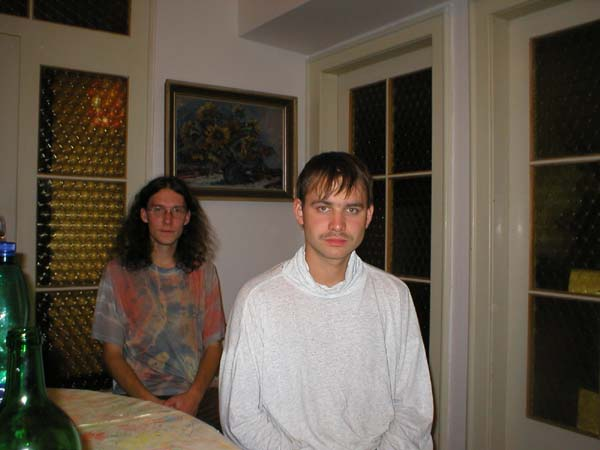
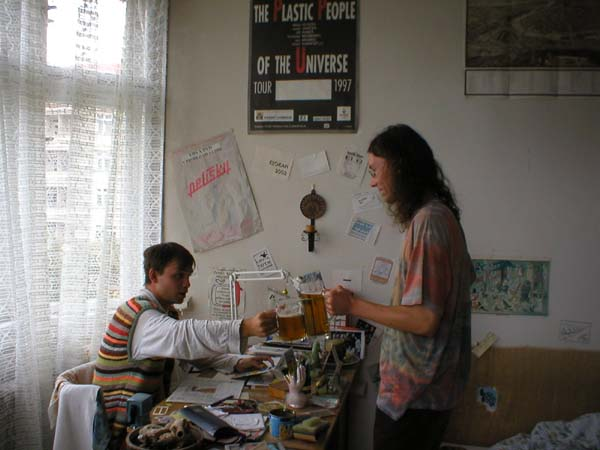
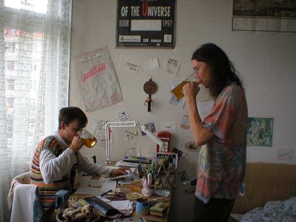
28.7.2004 (fotografoval Daniel Koumák Srb)
Tomáš Kout slavil 25. narozeniny. Foto 1: Po spánku pøed spánkem. Foto 2+3: Los pøi�ukos ètvrtstoletos.
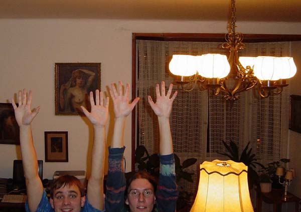
20.10.2004 (fotografovala samospouš� Krvik Totr)
Návrat z proutí dopsán.
© 2005 Krvik Totr Limity.